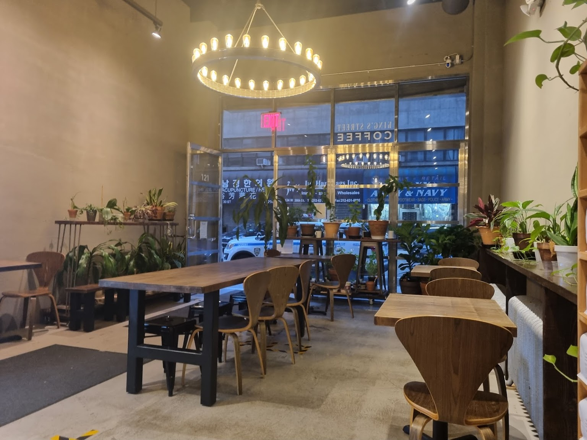

King's Street Coffee is a premier coffee shop located right outside NYC's Herald Square and Koreatown. We strive to brew the best coffee for all to enjoy, for native New Yorkers and visitors alike! Our regulars visit us from all five boroughs! Created in 2016, King's Street was born out of our founder's desire to provide a quiet respite from the shopping and restaurant capitals around the corner. Our space is open 6 days a week for anyone to sip a drink, catch-up with friends, or catch a breath.

Location: 121 W 30th St. New York, NY 10001
Hours: 7am to 5pm Monday through Friday 8am to 3:30pm Saturday Closed Sunday
Our Covid Policy:
In accordance with Emergency Executive Order 225, we require all sit-down guests to show proof of vaccination.
When you order at the counter, please show your CDC Vaccination Record Card or an official immunization record from the jurisdiction, state, or country where the vaccine was administered.
A photo of your vaccination record reflecting the person’s name, vaccine brand, and date administered, is considered acceptable as well.
We believe this will protect the public health, promote public safety, and save lives. Thank you for adhering to this policy.